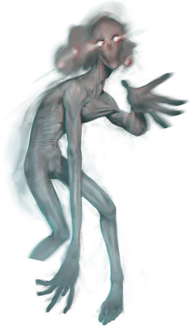

Свистун
Whistler
Большая Аберрация, обычно нейтрально-злая

Класс Доспеха 15 (природный доспех)
Хиты 180 (24к10 + 48)
Скорость 40 футов
| мод | спас | ||
|---|---|---|---|
| СИЛ | 13 | +1 | +1 |
| ЛОВ | 16 | +3 | +7 |
| ТЕЛ | 14 | +2 | +2 |
| мод | спас | ||
|---|---|---|---|
| ИНТ | 15 | +2 | +2 |
| МДР | 16 | +3 | +3 |
| ХАР | 18 | +4 | +8 |
Навыки Скрытность +11
Сопротивление урону психическая энергия
Иммунитет к состояниям испуг, истощение, очарование
Чувства слепое зрение 60 футов, пассивное Восприятие 13
Языки Глубинная речь, Телепатия 120 фт.
Опасность 9 (5000 опыта)
Бонус мастерства +4
Особенности
Размытая форма. Броски атаки против свистуна совершаются с помехой, до тех пор, пока свистун дееспособен.
Необычная природа. Свистуну не нужны воздух, еда, питье или сон.
Действия
Мультиатака. Свистун совершает три атаки Психическим ударом.
Психический удар. . Рукопашная атака заклинанием: +8 к попаданию, досягаемость 10 футов, одно существо. Попадание: 15 (2к10 + 4) урона психической энергией.
Потусторонняя мелодия (перезарядка 5-6). Свистун телепатически насвистывает потустороннюю мелодию в разумах до двух существ, которых он может видеть в пределах досягаемости своей телепатии. Каждая цель должна преуспеть в спасброске Мудрости Сл 16, иначе получит 33 (6к10) урона психической энергией и станет испуганной свистуном на 1 минуту. Испуганное существо может повторить спасбросок в конце каждого своего хода, оканчивая на себе действие эффекта в случае успеха.
Бонусные действия
Сюрреалистический шаг. Свистун телепортируется на расстояние до 20 футов в свободное пространство, которое он может видеть.
Описание
Свистуны - непостижимые сталкеры, родом из атмосфера кричащих пределов Дальнего предела. Их трудно увидеть, поскольку они не привязаны к одной точке пространства, расплываясь в состоянии постоянной физической неопределенности. Мертвый свистун предстает в виде серого, безликого, человекоподобного двуногого существа с длинными конечностями и тонкими пальцами. Те, кого преследует свистун, не могут заглушить его беззвучную мелодию из семи нот, потусторонней мелодии, которая вторгается в сознание и терзает его. Немногие существа, столкнувшиеся со свистуном, спасаются бегством; тех же, кто это делает, вечно преследует ужасная мелодия сталкера.